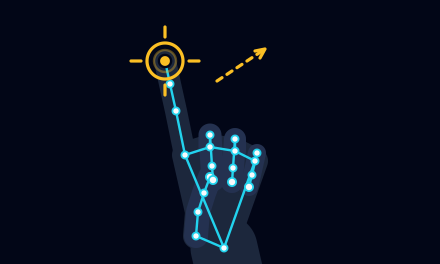
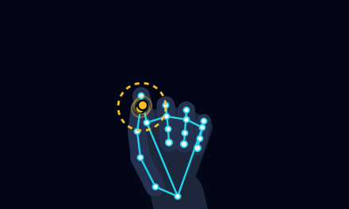
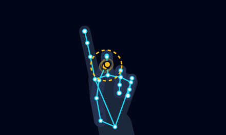
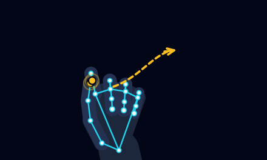
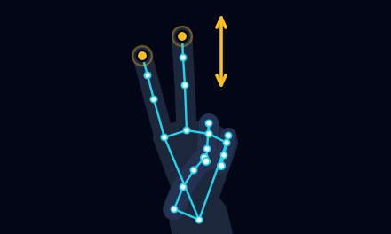
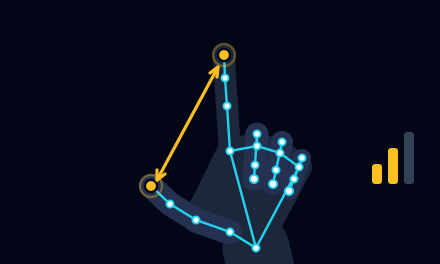
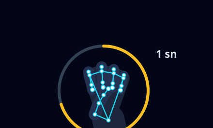

İmleç hareketi
Fareİşaret parmağınızı kaldırın; parmak ucunuz imleci taşır.
Sistemin tanıdığı el hareketleri. Kullanmadıklarınızı kapatabilirsiniz.

İşaret parmağınızı kaldırın; parmak ucunuz imleci taşır.

Başparmak ile işaret parmağının uçlarını kısa süre birleştirin.

Başparmak ile orta parmağın uçlarını kısa süre birleştirin.

Sol tık hareketini basılı tutup elinizi taşıyın; parmakları ayırınca bırakılır.

İşaret ve orta parmağı birlikte kaldırıp elinizi yukarı ya da aşağı taşıyın.

Başparmak ile işaret parmağı arasındaki mesafe sesi belirler.

Yumruk yapıp 1 saniye tutun. Kontrol durur; aynı hareketle devam eder.
İpucu: Elinizi kameraya dönük ve iyi aydınlatılmış bir yerde tutun; görüntüde başka el olmasın.